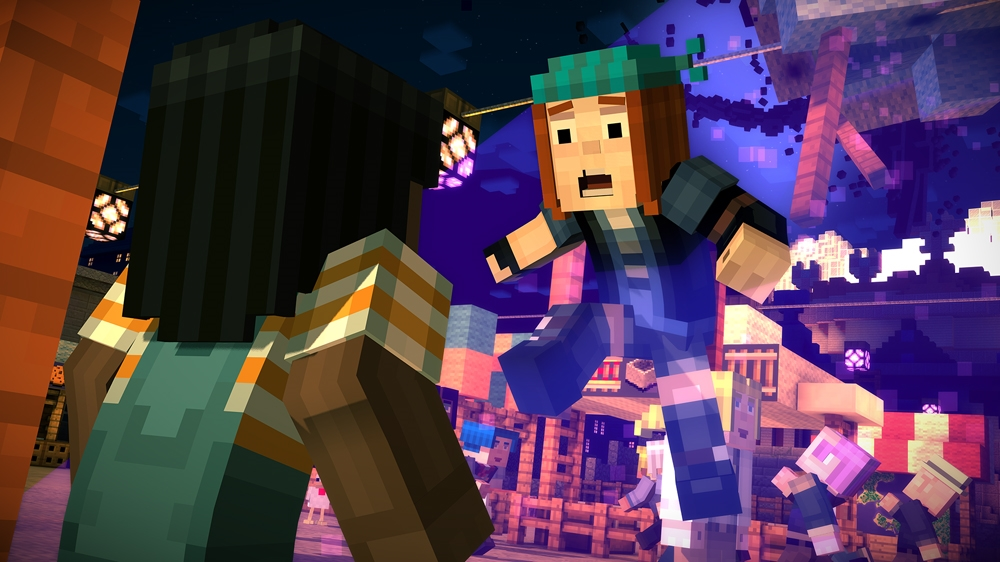

Question 5
How do you handle complex or challenging situations?
I reflect deeply and devise intricate solutions
I collaborate tirelessly for the collective good
I persistently solve problems step by step
I consider others’ needs to maintain balance
Back
Next